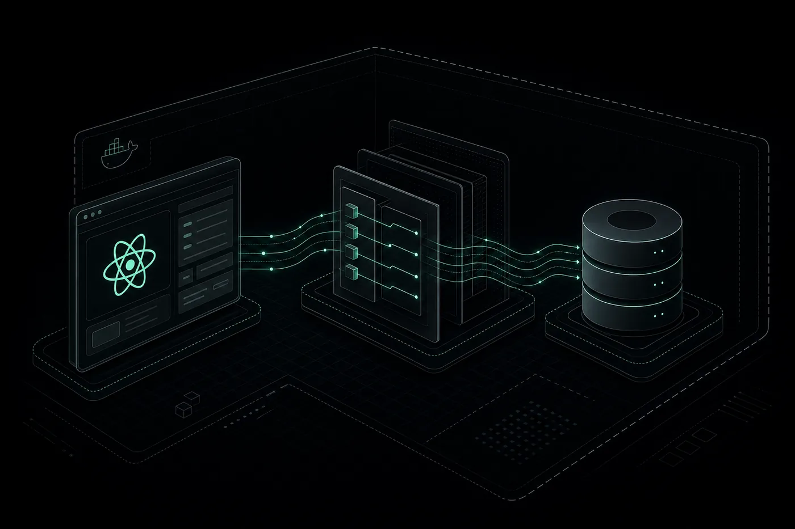

Taskapp
étude de cas
Une application de gestion de tâches construite volontairement en deux projets séparés : une API Laravel adossée à MySQL d'un côté, un client React monté sur Vite de l'autre. Voici pourquoi ce découpage, et ce qu'il change concrètement.
- Rôle
- Conception & développement full-stack
- Année
- Projet en cours
- Dépôts
- 2 (API + client)
- Stack
- Laravel · MySQL · Docker · React · Vite

Le problème
Une application de tâches paraît simple vue de loin : une liste, une case à cocher. La difficulté arrive plus tard — quand il faut filtrer, trier, gérer plusieurs utilisateurs, garder l'historique et faire évoluer le schéma sans casser l'existant.
Le piège classique est de tout mélanger dans un seul projet, avec des requêtes SQL posées directement dans les pages. Ça marche pendant deux semaines. Ensuite, chaque modification de la base impose de fouiller partout dans le code, et rien n'est testable isolément.
J'ai donc décidé de traiter Taskapp comme deux produits distincts qui communiquent par contrat, plutôt que comme un bloc unique.
L'API
Laravel, MySQL, Docker
Le back-end est une API REST en Laravel. Il ne rend aucune page : il expose des ressources en JSON et applique les règles métier. Les données vivent dans MySQL, et chaque évolution du schéma passe par une migration versionnée, donc rejouable à l'identique sur n'importe quelle machine.
- Modélisation relationnelle Les tables et leurs relations sont définies avant d'écrire la moindre ligne d'interface. Les contraintes vivent dans la base, pas dans le JavaScript.
- Couche Eloquent L'ORM de Laravel encapsule les requêtes. Le code métier manipule des objets, pas des chaînes SQL concaténées à la main.
- Conteneurisation Un Dockerfile décrit l'environnement complet. « Ça marche chez moi » cesse d'être un argument : l'image est identique en local et en production.
- Tests PHPUnit Les endpoints sont couverts par des tests automatisés, ce qui permet de refactorer sans prier.
// Le client ne connaît que ces routes, jamais la structure SQL. Route::apiResource('tasks', TaskController::class); // GET /api/tasks → liste filtrable // POST /api/tasks → création (validée côté serveur) // PATCH /api/tasks/{id} → mise à jour partielle // DELETE /api/tasks/{id} → suppression
Le client
React monté sur Vite
Le front est un projet React indépendant, construit avec Vite. Le choix de Vite n'est pas cosmétique : le rechargement à chaud garde l'état de l'interface pendant les modifications, ce qui change réellement le rythme de développement quand on travaille sur un board de tâches à plusieurs colonnes.
L'architecture de composants est pensée pour que le board reste lisible quand les données arrivent en masse : découpage par responsabilité, pas par page. La qualité du code est tenue par Oxlint, qui tourne assez vite pour être lancé à chaque sauvegarde plutôt qu'une fois par semaine.
Comme le client ne dépend que du contrat de l'API, il peut être remplacé — par une application mobile, par exemple — sans toucher une ligne du back-end.
Résultat
L'API et le client se déploient séparément. Une correction sur l'interface n'oblige pas à redéployer le serveur, et inversement.
Les migrations permettent de reconstruire une base propre en une commande, ce qui rend l'onboarding d'un nouveau développeur quasi immédiat.
Les tests PHPUnit sur les endpoints donnent un filet de sécurité : si le contrat casse, on le sait avant le déploiement.
Ce socle API + client découplés est celui que je réemploie pour les projets clients : il s'adapte à un autre domaine métier sans être réécrit.
Ce que j'en retire
Séparer coûte un peu de temps au démarrage — deux dépôts, deux configurations, un contrat à tenir. Ce coût est remboursé dès la première évolution un peu large du modèle de données.
La leçon principale n'est pas technique : c'est de décider tôt de ce que chaque partie a le droit de savoir. Le client n'a pas à connaître la forme des tables. Le serveur n'a pas à connaître la forme des écrans. Tout le reste en découle.